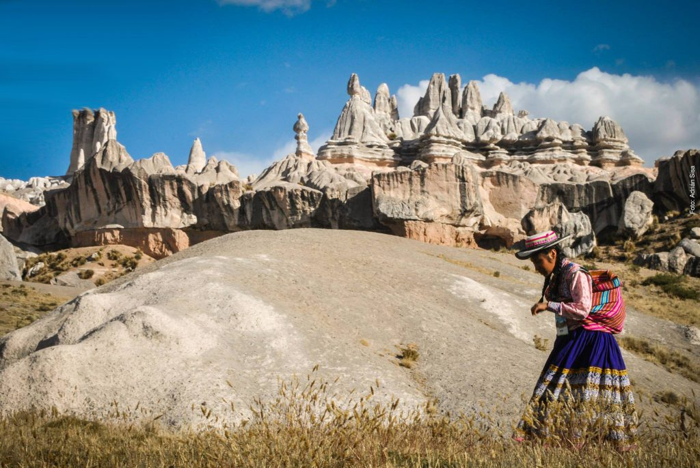
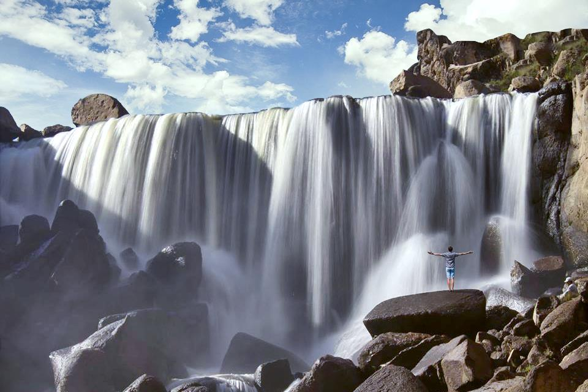

LUGARES TURISTICOS
1.Volcán Misti
Arequipa tiene uno de los destinos más impresionantes para los viajeros más atrevidos: el Misti, un volcán de 5.822 metros, con más de 800 mil años de antigüedad y que se encuentra entre los 16 volcanes activos y potencialmente activos del Perú. Si buscas un plan de máxima aventura, te recomendamos realizar el ascenso al Volcán Misti, una travesía de dos días rodeada de increíbles paisajes, acampando a más de 4.000 metros sobre el nivel del mar y con una llegada a la meta totalmente única: la vista del cráter del Misti.Cómo llegar: aunque el Misti lo puedes apreciar desde prácticamente cualquier parte de la Ciudad Blanca, si quieres hacer el trekking a la cima te recomendamos contratar un tour, ya que se trata de una caminata exigente, a gran altura y en la que necesitas estar acompañado por un guía que conozca la zona y que pueda acompañarte durante todo el camino.
2. Monasterio de Santa Catalina

En pleno centro de la ciudad de Arequipa se encuentra una de las grandes obras arquitectectónicas del Perú colonial. Se trata del Monasterio de Santa Catalina, un convento de clausura construido en el siglo XVI y que cuenta con más de 20 mil metros cuadrados que podrás explorar de punta a punta. Sus coloridas calles, su interesante historia y su asombrosa arquitectura han convertido al Monasterio de Santa Catalina en uno de los principales lugares turísticos de Arequipa.Cómo llegar: el Monasterio de Santa Catalina se encuentra a tan solo unas cuadras de la Plaza de Armas de Arequipa. Si quieres visitarlo por tu cuenta, solo tendrás que seguir la calle Santa Catalina (situada a un costado de la Basílica Catedral de Arequipa) y continuar por ella durante cuatro cuadras. Si lo prefieres, puedes unirte a nuestro City Tour en Arequipa, que incluye una visita guiada al monasterio y a otros lugares de la ciudad.
3. Reserva Nacional de Salinas y Aguada Blanca

Entre los grandes lugares naturales para visitar en los alrededores de Arequipa se encuentra la Reserva Nacional de Salinas y Aguada Blanca. Se trata del hogar de los majestuosos volcanes arequipeños que mencionamos anteriormente, de animales típicos del altiplano andino como la llama, la alpaca, la vicuña y el guanaco y de grandes lagunas en las que habitan aves como los flamencos.Además, en este lugar se encuentran las Cuevas de Sumbay, donde se conservan más de 500 pinturas de arte rupestre con una antigüedad de entre 6,000 y 8,000 años. Entre los dibujos que aquí podrás observar, se encuentran los típicos camélidos de esta región andina en situación de reposo.Cómo llegar: para llegar a la Reserva Nacional de Salinas y Aguada tendrás que tomar un taxi en el centro de Arequipa que te lleve hasta de Chiguata, a 25 km de la ciudad. Una vez aquí, tienes dos opciones, seguir con el taxi hasta la reserva o hacer el camino a pie, en una caminata sencilla de alrededor de dos horas de duración.
4. Mirador de Yanahura

Si eres de esos a los que les gusta tener una vista 360 de la ciudad que visita, tienes que conocer el Mirador de Yanahura. Situado en el pintoresco distrito del mismo nombre, este mirador ofrece una de las vistas más espectaculares de Arequipa, con la ciudad a los pies de sus tres volcanes más representativos: el Misti, el Chachani y el Pichu Pichu. Además, otro de los atractivos de este lugar son sus característicos arcos de sillar blanco, en los que podrás leer frases de personajes ilustres de Perú.Cómo llegar: el mirador de Yanahuara se encuentra a tan solo 10 minutos a pie del centro de Arequipa, por lo que puedes llegar hasta él caminando.
5. Bosque de Piedras Choqolaqa
La foto de portada de este artículo y uno de los 10 lugares del Perú que no sabes que existen. El Bosque de Piedras Choqolaqa parece un paisaje de otro planeta, el escenario de una ficción marciana hollywoodense o incluso un cuadro surrealista de Dalí. Se le conoce también como Nueva Arequipa, y es que la leyenda dice que un día sus pobladores dejaron de guardar respeto a sus Apus y como castigo todo se volvió de piedra.Cómo llegar: Desde Arequipa debes dirigirte a Tisco, trayecto que toma alrededor de 5 horas. Desde Tisco puedes consultar a los pobladores cómo llegar a Choqolaqa, que se encuentra a unas dos horas de distancia. Debido a la complejidad para llegar, recomendamos contratar algún operador turístico que ofrezca esta visita desde Arequipa.
6. Ruta del Sillar

Una de las principales características de Arequipa es el blanco de los muros de sus construcciones más importantes. Este color proviene del material con el que están construidos: el sillar, una famosa piedra originaria de los volcanes de la ciudad que ha servido como elemento de construcción durante cientos de años. Si quieres conocer cómo es el proceso de extracción de esta piedra, te recomendamos hacer la Ruta del Sillar, un recorrido por una cantera de las afueras de la ciudad en el que, además, podrás observar el trabajo de labrado, tallado y megatallado.Cómo llegar: existen buses y taxis que te llevan hasta las canteras de sillar, pero también excursiones organizadas, como nuestro tour Ruta del Sillar que además contempla una visita a los petroglifos de Culebrillas.
7. Cañón del Colca
Es inevitable: cuando pensamos en lugares turísticos de Arequipa lo primero que se nos viene a la cabeza es el Cañón del Colca. Esta impresionante joya de la naturaleza peruana es el principal atractivo turístico de la región arequipeña, ¡y no es para menos! Con 3.600 metros sobre el nivel del mar, el Colca es uno de los cañones más profundos (además de estrecho) del mundo. En él podrás hacer prácticamente de todo: desde disfrutar del vuelo del cóndor hasta relajarte en sus aguas termales, descubrir el origen de las terrazas preincas o dormir bajo un auténtico manto de estrellas rodeado totalmente por naturaleza.Cómo llegar: aunque puedes hacer el viaje por tu propia cuenta, tomando buses públicos o taxis, te recomendamos realizar nuestra excursión al Cañón del Colca, donde la experiencia será más cómoda y completa. Además, también puedes realizar un trekking de dos días por el Cañón del Colca conociendo sus rincones más espectaculares.
8. Bosque de Piedras de Imata y Catarata de Pillones
El Bosque de Piedras de Imata es un lugar en el que la acción del viento y las lluvias convirtieron a las rocas que aquí se encontraban en esculturas naturales de gran tamaño. Dar un paseo por este lugar es una experiencia totalmente apasionante. Muy cerca se encuentra uno de los lugares turísticos de Arequipa más novedosos y espectaculares: las Cataratas de Pillones, otra gran maravilla de la naturaleza en la que querrás pasarte todo el día tomando fotos y disfrutando de su aire puro y fresco.Cómo llegar: Estos dos lugares se encuentran a 145 km de la ciudad de Arequipa, por lo que la mejor opción para llegar hasta aquí es tomar un tour de todo el día, que te llevará directamente hasta el destino y con el que podrás disfrutar de la experiencia al máximo.